Getting Started
Welcome to Cellular Expert. This chapter guides you through project creation and analysis. It covers installing and preparing the Cellular Expert extension, activating your license, and locating the tools for the first time.
System Requirements
Requirements can vary significantly, depending on the acceptable calculation time and task complexity.
Minimal Requirements for Hardware
Processor (CPU)
| Level | Requirement |
|---|---|
| Minimum | 8 cores, hyperthreaded |
| Recommended | 16 cores |
(Optional) Requirements for GPU-accelerated calculations
- GPU — any NVIDIA GPU with CUDA capabilities (developer.nvidia.com/cuda-gpus)
- Driver version: 456.38 or later
- CUDA Toolkit 11.0 or later
Memory/RAM
| Level | Requirement |
|---|---|
| Minimum | 16 GB |
| Recommended | 32 GB |
Storage
| Level | Requirement |
|---|---|
| Minimum | 500 GB of free space |
| Recommended | 2 TB or more of free space on a solid-state drive (SSD) |
Minimal Requirements for Software
Cellular Expert runs on Microsoft Windows 10 or higher. It requires:
- Microsoft .NET 10.0 — Download .NET 10.0 Desktop Runtime (v10.0.11) – Windows x64 Installer
- Microsoft Visual C++ Redistributable packages 2015–2022 — vc_redist.x64.exe
- .NET support for ArcGIS libraries
- ArcGIS Pro from version 3.7.x
Installation
- If applicable, uninstall the previous version of Cellular Expert for ArcGIS Pro.
- Make sure that .NET 10.0 is installed.
- Make sure that ArcGIS Pro 3.7.x is installed.
- Run the
ceProSetup.msifile to install the new version of Cellular Expert for ArcGIS Pro. - After a successful installation, open Task Manager > Services, and run
CE_Pro_Prediction_Service.
Activation
This step is required for new users. If the Cellular Expert for ArcGIS Pro license has already been activated, you can skip this step.
You can activate the license in two ways.
First way
- Open ArcGIS Pro and select Settings.
- Navigate to Licensing → External Extensions.
- Find the Cellular Expert entry in the extensions table.
- Click the checkmark in the Enabled field. The License Activation dialog appears.
- Copy the User Key and send it to
support@cellular-expert.com. You will be provided with a License Activation Key, which must be entered into the same dialog. - Press Activate License — the license is activated, enabling the acquired versions of the add-on.
Second way
- Create an empty ArcGIS Pro project.
- Navigate to Insert and select New Map. After the map is inserted, the Cellular Expert tabs are enabled.
- Navigate to any of the Cellular Expert tabs and select License Information in the About group.
- Copy the User Key and send it to
support@cellular-expert.com. You will be provided with a License Activation Key, which must be entered into the same dialog. - Press Activate License — the license is activated, enabling the acquired versions of the add-on.
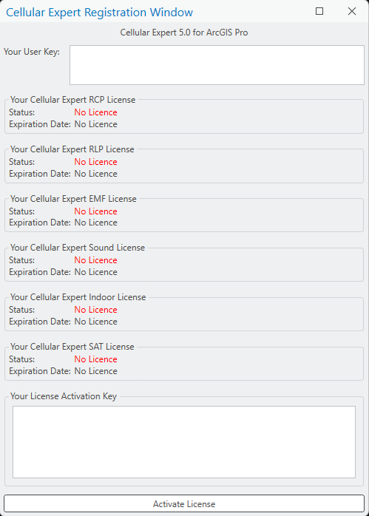
If you want to check the expiration date of the license, you can:
- Open ArcGIS Pro and start/open a project with an active map.
- Navigate to the Cellular Expert tab.
- Select License Information in the About group.
If you encounter any problems or want additional details about the license, contact Cellular Expert at support@cellular-expert.com. For more information, see About.
Tools
The Cellular Expert tools are part of the Cellular Expert add-on. They appear automatically after installation of CE for ArcGIS Pro and are found in the menu ribbon.
There are 6 types of licenses and therefore 6 different tabs with various tool configurations:
- SAT
- Sound
- EMF
- Indoor
- RCP
- RLP
Each tab exposes the Workspace, Data Management, Profile, and Coverage Prediction groups relevant to that license — for example, RCP and SAT additionally expose Calculate Cells Area and Model Tuning, and RLP exposes Radios, Spectrum Masks, and Frequency Plans instead of the network-object tools used by the other modules. The exact tool set shown on each tab is illustrated below, license by license.
SAT
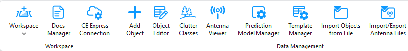
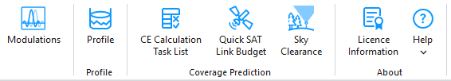
Sound
Sound's Coverage Prediction group includes Siren Sound Prediction alongside the shared CE Calculation Task List and Visibility Prediction tools.
Note: The Sound manual's own dedicated chapters document only Cells, CE Calculation Task List, and Visibility Prediction for this license — there is no dedicated "Add Sirens" or "Siren Sound Prediction" section anywhere in the Sound manual. Siren Sound Prediction appearing in this ribbon screenshot is preserved here exactly as shown in the source PDF; it is not otherwise described or confirmed as a supported Sound workflow.
Indoor
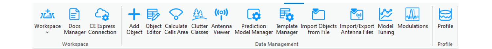
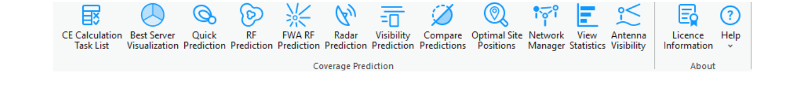
Note: As rendered in the source PDF, Indoor's ribbon screenshot is identical to RCP's — including Calculate Cells Area, Model Tuning, Modulations, and the full RCP Coverage Prediction tool set (Best Server Visualization, RF Prediction, FWA RF Prediction, Radar Prediction, Compare Predictions, Optimal Site Positions, Network Manager, View Statistics, Antenna Visibility). This contradicts the rest of the Indoor manual, which documents none of these tools for Indoor — it is preserved here exactly as shown in the source PDF rather than silently corrected, and should be treated as an unresolved source inconsistency, not a confirmed Indoor capability.
Indoor's Workspace menu additionally exposes Create Indoor Workspace:
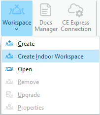
EMF
EMF additionally exposes an EMF Calculations group with the EMF button, described in EMF Calculations.
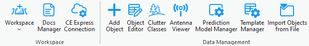
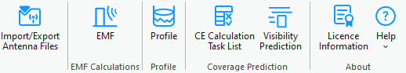
RCP
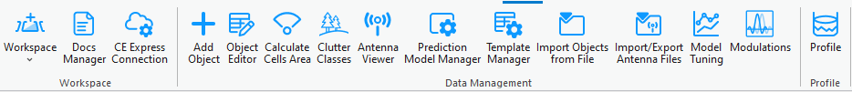
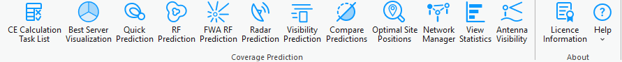
RLP
RLP replaces the shared network-object tools with Radios, Spectrum Masks, and Frequency Plans in Data Management, and adds dedicated Mesh Network and Radio Links groups.
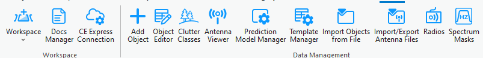
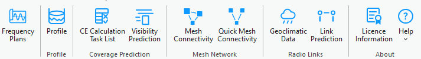